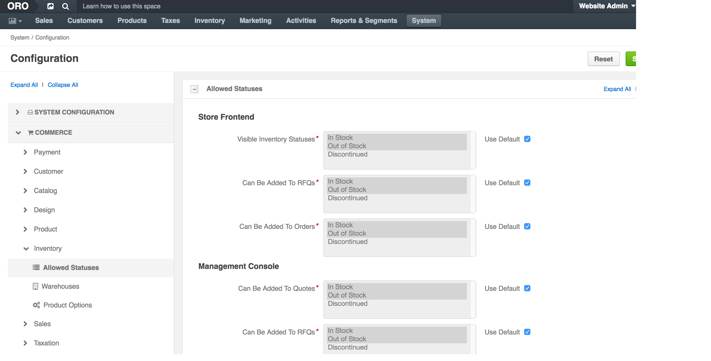

Warehouses and Inventory¶
This topic contains the following sections:
Overview¶
Inventory in OroCommerce helps you track the availability of your product in one or more warehouses, display it for the buyer and sales people, and automatically adjust it after every operation in OroCommerce.
You can create one or more warehouses, configure inventory management options, manage product inventory status and track product quantities in every warehouse.
System-wide Inventory Configuration¶
OroCommerce groups inventory configuration options into the following categories:
Allowed Inventory Statuses¶
You can control the way product inventory is displayed for your buyers (in the OroCommerce Store Frontend) and sales people (in the OroCommerce Management Console). Moreover, you can restrict adding products with particular inventory status to an RFQ, customer order, quote, or a shopping list.
To change the default inventory statuses:
Navigate to the system configuration (click System > Configuration in the main menu).
Select Commerce > Inventory > Allowed Statuses in the menu to the left.
The following page opens:
The following table describes the options available on the page:
Name Description Store Frontend: Visible Inventory Statuses A buyer can see products with the selected inventory statuses on the OroCommerce store frontend. Store Frontend: Can Be Added To RFQs A buyer can add Products with the selected inventory statuses when creating an RFQ on the OroCommerce store frontend. Store Frontend: Can Be Added To Orders A buyer can add Products with the selected inventory statuses when creating an Order on the OroCommerce store frontend. Management Console: Can Be Added To Quotes A sales person can add products with the selected inventory statuses to the Quotes using OroCommerce management console. Management Console: Can Be Added To RFQs A sales person can add products with the selected inventory statuses to the RFQs using OroCommerce management console. Management Console: Can Be Added To Orders A sales person can add products with the selected inventory statuses to the Orders using OroCommerce management console. Management Console: Can Be Added To Shopping Lists A sales person can add products with the selected inventory statuses to the Shopping Lists using OroCommerce management console. To customize the list of statuses for any of the aforementioned options:
- Clear the Use Default box next to the option.
- Click on the inventory status to select/deselect it. Press Shift and click to select/deselect a range of items. Press Ctrl and click to select/deselect multiple items in no particular order.
Click Save.
Product Inventory Options¶
You can control the way product inventory is managed for every product in the OroCommerce product catalog.
To customize the default product inventory options:
Navigate to the system configuration (click System > Configuration in the main menu).
Select Commerce > Inventory > Product Options in the menu to the left. The following page opens:

The following table describes the options available on the page:
Name Description Managed Inventory This options indicates whether the product inventory is handled by OroCommerce vs external application. Inventory Threshold A minimum quantity of the product that is treated as In stock. When a product quantity reaches this threshold value, the product inventory status fallback to Out Of Stock. Backorders A flag that indicates whether OroCommerce accepts backorders. When set to yes, buyers and sales people can order products in the quantities that are not currently available in the warehouses. The remaining portion of the order will be sustained until the product gets back in stock. Decrement Inventory A flag that indicates whether OroCommerce decrements inventory upon order. When both Decrement Inventory and Backorders are enabled, product quantity may get negative. To customize any of these options:
- Clear the Use Default box next to the option.
- Select Yes/No for the flag-like options, and type in the updated value for the threshold-like options.
Click Save.
Warehouses¶
After you created the warehouse in the Inventory > Warehouses section, you should enable and prioritize them to ensure that OroCommerce uses the most efficient and recommended strategy for inventory updates that happen during the Store operations.
To enable and prioritize warehouses:
- Navigate to the system configuration (click System > Configuration in the main menu).
- Select Commerce > Inventory > Warehouses in the menu to the left. The following page opens:

Enable as many warehouses as you need:
- If necessary, click +Add Warehouse.
- Select the warehouse name in the Choose a Warehouse list.
- Assign a numeric priority to the enabled warehouse (1 is higher, 100 is lower). Products will be ordered and shipped from the higher priority warehouses first.
Note
You can manage the list of enabled warehouses using the following actions:
- To disable a warehouse, click x to the right of the priority.
- To clear the selected warehouse, click x to the right of the warehouse name.
- To select different warehouse from the list, click v to the right of the warehouse name, and select a new warehouse to enable.
- To see the complete list of the warehouses in a table view, click bars sign to the right of the warehouse name. The list of warehouses opens in a popup window.
- Once all warehouses are enabled and prioritized, click Save.
Order Quantity Limitations¶
You can control the minimum and maximum quantities that are available buyers (in the OroCommerce Store Frontend) and sales people (in the OroCommerce Management Console) can claim in the RFQ, customer order, quote, or a shopping list.
To change the default inventory quantity limitations:
Navigate to the system configuration (click System > Configuration in the main menu).
Select Commerce > Inventory > Limitations in the menu to the left.
The following page opens.

The following table describes the options available on the page:
Name Description Minimum Quantity To Order Minimum quantity that buyer or sales person may be the claim in the RFQ, customer order, quote, or a shopping list. Maximum Quantity To Order Maximum quantity that buyer or sales person may be the claim in the RFQ, customer order, quote, or a shopping list. To customize any of these options:
- Clear the Use Default box next to the option.
- Type in the updated quantity.
Click Save.
Product-level Inventory Configuration¶
In the Inventory Registry¶
To manage quantities for all products in multiple warehouses:
- Navigate to the Inventory > Manage Inventory in the main menu.
- Filter the product inventory to limit the records to the subset you would like to update.
- Edit inventory status and quantity in the respective columns by clicking on the current value, typing in the new one, and pressing Enter.
Updated information is automatically saved.
Per Product¶
To manage quantities for a single product in multiple warehouses:
Navigate to the product details:
- Navigate to Products > Products in the main menu.
- Search for the necessary product and view its details.
Click Inventory on the top right of the page.
The following page pops up:

Update product quantity, if necessary.
- Click Save.
Manage Inventory in the External Systems¶
When your need OroCommerce and other systems (like asset management and accounting software) exchange and synchronize product inventory information, you may transfer the inventory data from and into OroCommerce in the .csv format.
Export¶
You can export the inventory information in the .csv format:
- Select the items to export using a check box at the beginning of the corresponding rows. You can filter the list and use the Select All option in the table header, if necessary.
- Click Export.
Later you can import the updated or processed inventory using import as described below.
Import¶
Inventory Statuses and Levels¶
To streamline adding a large bulk of items, like customer information, products, prices or inventory information, you can import the bulk details from a .csv file.
Import the product inventory statuses (In Stock, Out of Stock, or Discontinued) and levels (quantity and unit) for the warehouses using the .csv file that follows the inventory details data structure.
Example of inventory levels bulk import template
| SKU | Product | Inventory Status | Warehouse | Quantity | Unit |
|---|---|---|---|---|---|
| product.1 | Product Name | In Stock | First Warehouse | 50 | kg |
Note
- Inventory status should be In Stock, Out of Stock, or Discontinued.
- The warehouse and unit should be created prior to the inventory levels import.
To import a bulk of product information:
- Navigate to the Products > Products.
Get a sample: To download a sample .csv file with the necessary headers, click Download Data Template in the list next to Import.
Note
Follow the on-screen guidance for any additional actions. For example, for the inventory template, select one of the options: a) inventory statuses only or b) detailed inventory levels.
Prepare data for import: Based on the downloaded file, create your bulk information in .csv format. Once your file is ready, click Import, select the prepared comma-separated values (.csv) file, and click Submit.
Validate import results: Review import validation results. If there are any Records with errors, fix them in the .csv file prior to starting the import.
Launch import: After successful validation, click Import.
Interactive status messages inform about the import progress and once the import is complete, the changes are reflected in the list upon refresh. Additionally, an email message with the import status is delivered to your mailbox.
See this two minute demo of the import process:
Inventory Statuses Only¶
Import the global product inventory statuses (In Stock, Out of Stock, or Discontinued) using the .csv file that follows the high-level inventory details data structure.
Example of inventory statuses bulk import template
| SKU | Product | Inventory Status |
|---|---|---|
| product.1 | Product Name | In Stock |
Note
Inventory status should be In Stock, Out of Stock, or Discontinued.
Inventory status import process is similar to the inventory level import.